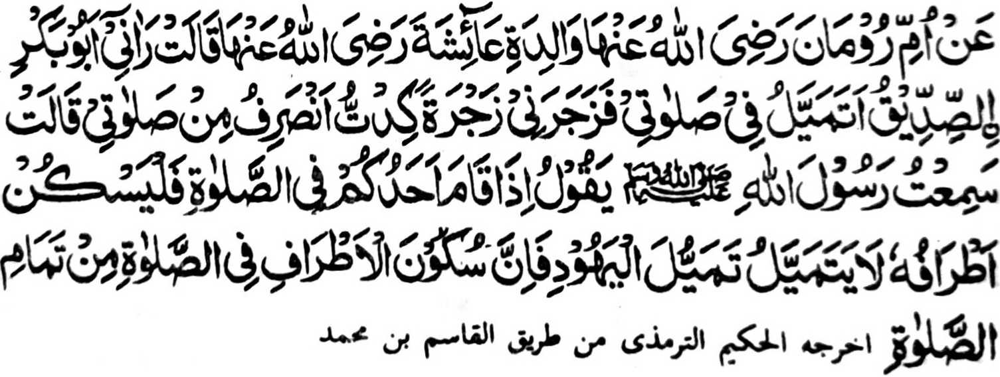
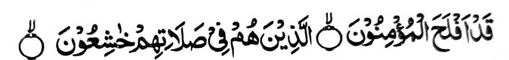

Hadith 6

Piyanothol o Umme Rooman a ina o A’isha (Radhiallaho ‘Anha), “Miya-ilay
ako o Abu Bakr (Radhiallaho ‘Anho) a gi-i ako mela-i-laing ko Sambayang na
pimbongetan ako niyan sa kambonget a mikhaitobo na makambengkas ako ko
Sambayang aken.” Pitharo iyan, “Miyaneg aken so Rasulollah (Sallallaho ‘Alaihi wa Sallam) a gi-i
niyan tharo-on, ‘Igira tomitindeg so tao ko Sambayang na pakatatarega
niyan so lawas iyan. Oba di pela-i-laing sa lagido gi-i kapela-i-laing o
manga Yahoodi sabap sa so kapakatatarega ko lawas si-i ko Sambayang na ped
ko ikhatarotop o Sambayang.’”
So kapakatatarega ko lawas igira Sambayang na inipaliyogat o madakel a
Hadith. Si-i sa paganay na aya ola-ola o Nabi (Sallallaho ‘Alaihi wa Sallam) na lomalangag sa
langit ka oba maka-toron so Jibrail (‘Alaihis Salam) a maawid sa Ayaat,
taman sa so manga mata niyan na di niyan mai-inengka na pekhilangag iyan
apiya igira gi-i zambayang. Kagiya mitoron so paganay a dowa Ayaat ko
Surah Al-Mu’minun, ma-ana

“Sabenar a Phakada-ag so Miyamaratiyaya. So siran si-i ko Sambayang iran
na somasangkop siran.”
(Surah Al-Mu’minun: 1-2)
na inibaba iyan den so pangilai-layan niyan igira gi-i zambayang.
Miyapanothol pen a si-i ko paganay na so manga Sahabah na igira gi-i siran
zambayang na di siran gi-i maniri-siri, ogaid na soden so kinitoron
angka-iya Ayaat na initareg iran a ola-ola iran noto.
-
Si-i ko kaphagosaya sangka-iya manga Ayaat, na so Abdullah bin Umar
(Radhiallaho ‘Anho) na pitharo iyan, “Igira tomitindeg so manga Sahabah
ko Sambayang na di siran phaningi-dingil. Tanto siran a tomotordo ko
Sambayang iran a so manga pangilai-layan iran na tatap ko sododan niran,
go miyatiman so kasasangkop iran ko Allah a Kadenan iran.”
-
Aden a miniza ko Ali (Radhiallaho ‘Anho), “Antona-ai kambayorantang ko
Sambayang?” Pitharo iyan, “So katekhes o pamikiran si-i ko Sambayang na
ped ko kambayorantang.”
-
So Ibn Abbas (Radhiallaho ‘Anho) na pitharo iyan, “So somasangkop (a
miya-aloy sangkanan a manga Ayaat) na siran so manga tao a ika-alek iran
so Allah ago di pekha-o-kaog igira gi-i zambayang.”
-
So Abu Bakr (Radhiallaho ‘Anho) na piyanothol iyan, “Miyaka-isa na so
Nabi (Sallallaho ‘Alaihi wa Sallam) na pitharo iyan, ‘Lindong kano ko Allah sabap ko mamantiya a
kambayorantang.’ Pitharo ami, ‘Antona-ai mamantiya a kambayorantang, Hay
Nabi o Allah (Sallallaho ‘Alaihi wa Sallam)?’ Pitharo iyan, ‘Giyoto so tao a mamantiya na
mbabayorantang, ogaid na so kapeMunapik na zisi-i ko poso.’”
-
So Abu Darda (Radhiallaho ‘Anho) na piyanothol iyan a lagida-i a Hadith
a so Nabi (Sallallaho ‘Alaihi wa Sallam) na miyapanothol a miyatharo iyan, “So kapanangin a
kambayorantang na giyoto so tao a si-i ko mapayag iyan na mamantiya na
matetekhes so pamikiran niyan, ogaid na so poso na da-on so
kambayorantang.”
-
So Qatadah (Radhiallaho ‘Anho) na pitharo iyan, “So kambayorantang ko
Sambayang, na so poso na pheno-on a kalek ko Allah, na go so
pangilai-layan na imbaba.”
-
Miyaka isa na miya-ilay o Nabi (Sallallaho ‘Alaihi wa Sallam) a mama a phagipon niyan so sompa
iyan ko masa a gi-i sekaniyan zambayang. Pitharo iyan, “Opama ka so poso
iyan na madadalemon so kambayorantang, na so langon o lawas iyan na di
maka-og.”
-
So Aisha (Radhiallaho ‘Anha) na miyaka-isa na iniza-an niyan so Nabi
(Sallallaho ‘Alaihi wa Sallam) o antona-a i pamikiran niyan ko tao a gi-i maningi-dingil igira
gi-i zambayang. Pitharo iyan, “Ipembinasa oto o Shaitan ko Sambayang.”
-
Miyaka-isa na so Nabi (Sallallaho ‘Alaihi wa Sallam) na pitharo iyan, “So manga tao a phelangag
sa poro igira gi-i zambayang na taregen niyan angkanan a ola-ola, ka
amay-amay na mabolandang so pangilai-layan niran na di kiran den makandod
ko asal iyan.”
Madakel a mitharo ko manga Sahabah ago so manga (Tabi-in) miyakatondog
kiran a so kambayorantang na aya ma-ana niyan na so karerenek ko
Sambayang. So Nabi (Sallallaho ‘Alaihi wa Sallam) na miyapanothol (o madakel a miyanothol) a
miyatharo iyan, “Pamayandegen niyo so omani Sambayang si-i ko okit a
(kambayorantang) lagid o ba sekaniyan i mori-pori a Sambayang iyo ko
kawiyag-oyag iyo.”